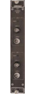

Ortec ASPEC-927



The Ortec ASPEC-927 is a dual multichannel buffer (MCB) has two independent MCB’s in a single-width NIM module. It is designed for high-performance nuclear spectroscopy.It has two independent 16K ADCs and 512kb of memory. The successive-approximation ADC’s (1.25 µs conversion time) have conversino gain settings of 512,1024, 2048, 8192, and 16384.
The 927 requires a NIM bin supplying +6V, +/-12V.
Please refer to the manual for more details, especially information about the zero dead time correction features.
MCA927 Data Format
The data records produced by the 927 are are follows:
xxxx xxxx xxxx xxxx xxxx xxxx xxxx xxxx
^^^^ ^^^^ ^^^^ ^^-----------------------data id
^^ ^^^^ ^^^^ ^^^^ ^^^^-length in longs
xxxx xxxx xxxx xxxx xxxx xxxx xxxx xxxx
^-----------------zdt (1=ZDT memory, 0=spectrum memory)
^----------------channel
^^^^ ^^^^ ^^^^-device
xxxx xxxx xxxx xxxx xxxx xxxx xxxx xxxx liveTime (20ms/bit, i.e. multiply by 0.02 to get seconds)
xxxx xxxx xxxx xxxx xxxx xxxx xxxx xxxx realTime (20ms/bit, i.e. multiply by 0.02 to get seconds)
xxxx xxxx xxxx xxxx xxxx xxxx xxxx xxxx
^-------zdt Spectra enabled
^------zdt counting enabled
^^^^-zdt speed
xxxx xxxx xxxx xxxx xxxx xxxx xxxx xxxx spare
xxxx xxxx xxxx xxxx xxxx xxxx xxxx xxxx spare
xxxx xxxx xxxx xxxx xxxx xxxx xxxx xxxx spare
xxxx xxxx xxxx xxxx xxxx xxxx xxxx xxxx spare
xxxx xxxx xxxx xxxx xxxx xxxx xxxx xxxx spare
the spectrum follows and fills out the record
Note that the spectra in the record come either from the main spectrum memory (zdt == 0) or from the ZDT memory (zdt == 1). The spectra have different meanings depending on the zdt settings. Consult the hardware documentation for more information.
Start/Stop the selected channel

Stop/Stop both channels.
Read card status and print a report to the log. Note that if the card was left running when ORCA is shutdown you have to read the card status to put the dialog into the correct state.


Careful!
Stopping acquisition on a channel that was started as part of an ORCA run will stop that run. If the ORCA run is flagged as a repeat run, it will stop then immediately restart.
Enabled channels will start automatically when an ORCA run starts if the MCA927 is in the data taking list. Auto Stop channels will stop the run when a one of the presets is satisfied
Enabled presets will stop acquisition when the preset is satisfied
The lower and upper channel over which data will be taken. Note that the upper level discriminator can be disabled.
Maximum number of channels in the spectra
You can preload the live time and real time counters at the start of acquisition
Open a spectra in separate plotting window
If the card is non-responsive or if power was cycled you must re-load the FPGA. Note that unless you have a custom copy of the FPGA code, just use the copy built into ORCA
Select the proper device. If you have more than one card, It doesn’t matter which dialog is assigned to which card.
If ORCA was stopped with the MCA running, you can sync the run state of the hardware with this dialog using this button